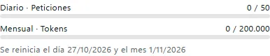
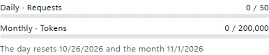
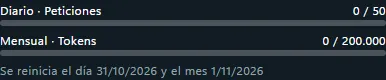
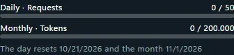

PresupuestosBudgets
Pon límites por día o por mes a una API o a todo el espacio, en peticiones, tokens o dólares.Set daily or monthly limits for an API or the whole workspace, in requests, tokens or dollars.
Cómo funcionaHow it works
- 1. ConsumoUsageCada petición suma peticiones, tokens y, si el agente lo informa, dólares.Every request adds requests, tokens and, if the agent reports it, dollars.
- 2. Aviso al 80 %Warning at 80%La barra se pone amarilla.The bar turns yellow.
- 3. Tope al 100 %Cap at 100%La app recibe un error 429 hasta que empieza el día o el mes siguiente.The app gets a 429 error until the next day or month starts.
Paso a pasoStep by step
- Crea en Mis APIs una API para esa aplicación.Create an API for that app in My APIs.
- En sus ajustes, pon un presupuesto diario o mensual en peticiones, tokens o dólares.In its settings, set a daily or monthly budget in requests, tokens or dollars.
- Si hace falta, «Reiniciar consumo» la vuelve a abrir al momento.If needed, "Reset usage" opens it again right away.




El límite en dólares solo suma el costo que informa el agente (hoy Claude). Para todo el espacio, añade «presupuesto» a la configuración global.The dollar limit only adds up the cost the agent reports (Claude today). For the whole workspace, add "presupuesto" to the global settings.
Si algo fallaIf something fails
- Se agotó el presupuestoThe budget ran out
presupuesto_agotado - Esa API o el espacio llegó a su límite (error 429). Espera al reinicio del día o del mes, o pulsa «Reiniciar consumo» en Mis APIs.That API or the workspace hit its limit (error 429). Wait for the day or month to reset, or click "Reset usage" in My APIs.
Temas relacionadosRelated topics
Conectar mi appConnect my appCambia la URL base de tu SDK de OpenAI o Anthropic por la de Tramtai y elige el agente con model.Change your OpenAI or Anthropic SDK’s base URL to Tramtai’s and pick the agent with model.
HistorialHistoryCada petición queda en el Historial con su respuesta, el agente que respondió y el registro de cada paso.Every request stays in History with its answer, the agent that answered and the log of each step.
ConceptosConceptsLas palabras que usa Tramtai, en una línea cada una.The words Tramtai uses, one line each.